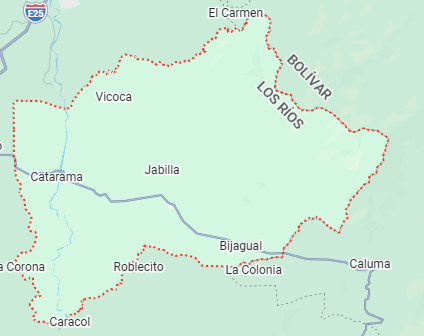

Reseña: Su cabecera cantonal es Catarama. Es un territorio históricamente conectado con la navegación fluvial del río Zapotal. Su base económica gira enteramente en torno a la agricultura de ciclo corto.
Urbanas: Catarama, Las Reales.
Rurales: Ricaurte.
Cazuela de mariscos de río, ayampacos y las conocidas tortillas de maíz hechas en tiesto de barro.
Un remozado espacio urbano a orillas del río idóneo para caminatas nocturnas y recreación familiar.
Balneario de Ricaurte: Zona de cabañas gastronómicas y playas fluviales muy concurridas durante los fines de semana.
Hostal Urdaneta, Residencial Catarama.
Amada Zambrano Rodríguez.

35.000 habitantes.
